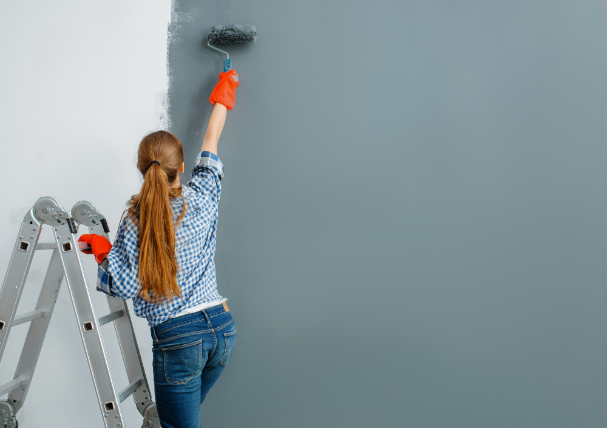

Lupa Painting Blog · Cabinet Refinishing Guide
Professional Cabinet Painting Guide: How to Achieve a Smooth, Durable, Factory-Grade Finish
Discover the step-by-step method professional painters use to transform old kitchen and bathroom cabinets into flawless, factory-like finishes — using specialized prep, primers, paints, and application techniques.

Cabinet painting is one of the most cost-effective ways to modernize a kitchen or bathroom. But it’s also one of the most technically demanding painting jobs. Cabinets endure constant handling, heat, grease, moisture, and daily wear — far more than regular walls or trim.
Professional cabinet painters follow a detailed, multi-stage refinishing process designed to deliver a finish that is smooth, durable, washable, and resistant to chipping. Below, you’ll learn exactly how the pros transform outdated cabinets into a stunning, factory-like finish.
1. Door Removal & Organized Labeling System
The first step is full disassembly — removing all cabinet doors, drawers, hinges, and hardware. But professionals go further by labeling every piece to ensure perfect reinstallation.
How pros stay organized:
- Numbering every door and drawer with a removable label.
- Photographing hinge positions for reference.
- Separating screws, handles, and hinges into labeled bags.
- Creating layout diagrams to track positions.
Pro insight: Organization prevents misalignment and ensures perfect, factory-style reinstallation.
2. Deep Cleaning & Degreasing: The Most Important Step
Kitchens accumulate oils, steam, fingerprints, cooking residue, and silicone-based cleaners — all of which can ruin paint adhesion. That’s why professionals aggressively degrease before sanding.
Products used by professionals:
- Krud Kutter Gloss-Off
- TSP or TSP-substitutes
- Denatured alcohol for final wipe-downs
What cleaning removes:
- Grease and oils around handles
- Food splatter
- Residue from polishes and sprays
- Invisible silicone film from old cleaners
Clean cabinets = proper adhesion. Skipping degreasing is the #1 reason DIY cabinet paint peels.
3. Sanding, Filling & Surface Repair
After cleaning, professionals sand every surface to remove gloss and create a profile the primer can bond to. Painters also repair dents, scratches, and worn edges.
How the pros sand:
- Scuff-sanding all surfaces using 150–220 grit sandpaper.
- Using orbital sanders for flat areas and hand sanding for details.
- Smoothing edges and shaping worn corners.
Repairs completed before priming:
- Filling dents and grain lines with wood filler.
- Fixing chipped corners with epoxy.
- Sanding filler smooth for a perfectly flat surface.
Pro insight: Smooth prep = smooth finish. Cabinets magnify imperfections more than walls.
4. High-Adhesion, Stain-Blocking Primers
Cabinets, especially oak and pine, contain tannins and deep grain that can bleed through paint. That’s why professionals use specialty primers.
Best primers for cabinet refinishing:
- BIN Shellac Primer: ultimate stain blocker; creates the smoothest finish.
- Stix Waterborne Bonding Primer: excellent adhesion to glossy surfaces.
- Kilz Restoration: heavy-duty primer for stained or older cabinets.
Primer seals wood, prevents bleed-through, and creates a flawless surface for enamel paints.
5. Using the Right Cabinet Paint: Hard, Smooth & Washable
Cabinet paint must be tougher than wall or trim paint. Pros use enamel coatings designed to cure into a hard, furniture-grade shell.
Professional cabinet paints:
- Benjamin Moore Advance: smooth leveling; low VOC; furniture-grade.
- Sherwin-Williams Emerald Urethane: extremely durable and self-leveling.
- Benjamin Moore Scuff-X: ultra-resistant for high-traffic kitchens.
Why enamel paints excel:
- Self-level for a smooth, sprayed look.
- Dry harder and resist scratches.
- Washable without dulling or softening.
- Ideal for kitchens and bathrooms.
6. Spraying vs. Rolling: How Pros Achieve the Factory Finish
To get the “factory finish” look — smooth, glass-like, with no brush marks — professional painters almost always spray cabinet doors and drawers.
Professional method:
- Doors are removed and sprayed in a controlled space.
- HVLP or airless sprayers apply ultra-fine coats.
- Surfaces are sanded lightly between coats (320–600 grit).
- Two to three coats of enamel paint are applied.
- Final coat cures into a hard, durable shell.
Pro tip: Good spraying looks like factory lacquer — smooth, clean, perfect.
7. Drying vs. Curing: The Science Behind Long-Lasting Cabinets
Cabinet paint feels dry in a few hours — but curing takes much longer. During curing, enamel hardens into a durable, wash-resistant coating.
What professionals recommend:
- Allow light use after 48 hours.
- Avoid aggressive cleaning for 14 days.
- Full cure occurs at 21–30 days depending on paint type.
Once cured, enamel paint becomes exceptionally tough and resistant to chipping.
Conclusion
Professional cabinet painting is a meticulous, multi-step process designed to create a smooth, durable, factory-grade finish that transforms kitchens and bathrooms. With proper cleaning, sanding, priming, spraying, and curing, cabinets can look brand new and last for years.
Whether you're refreshing a dated kitchen or preparing a home for resale, cabinet painting offers one of the highest returns on investment in residential remodeling.